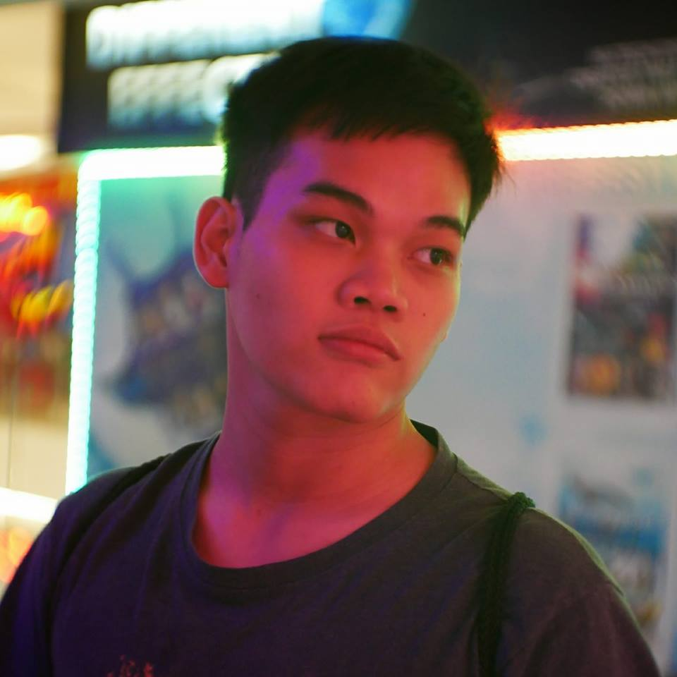

My Profile

Name: Wasin Kosavanichakarn
No.: 59070155
Birthdate: 13 Dec 1997
Hobby: Collect a Model, Facebook

Name: Wasin Kosavanichakarn
No.: 59070155
Birthdate: 13 Dec 1997
Hobby: Collect a Model, Facebook
ด้วยความเป็นเว็บที่รวมรูปสวยๆสไตล์ต่างๆทำให้Pinterestดูมีความสวยงามที่แตกต่างกันในแต่ละหน้า และtemplateและการจัดวางที่ดูง่ายเป็นองค์ประกอบช่วยดึงดูให้รู้สึกน่าติดตามเว็บมากขึ้น

ความเรียบง่ายของเว็บและอินเตอร์เฟสที่ไม่ซับซ้อนทำให้การดูรูปบนinstagramนั้นง่ายและหน้าติดตาม สามารถโฟกัสที่ตัวรูปเนื้อหาที่เราสนใจได้อย่างเต็มที่ เรียกได้ว่าดีทำออกมาได้ดีทั้งUIและUX

มีความเรียบง่ายแต่มีลูกเล่น การใช้สีที่ดู่minimalแต่มีการcomtrastด้วยการเอาสีที่ต่างกันมาตัดทำให้จากส่วนบนของเว็บที่ดูแล้วทำให้รูปสึกเรียบถูกทำให้มีชีวิตชีวาด้ยสีแดง
ชอบในการใช้สีที่ดูหม่นๆทำให้รู้สึกเหงาๆครึ้มๆ และการใช้สีแบบFlat Designที่มีความเรียบแบนแล้วรูการ์ตูนที่แบ่งเป็นเลเยอร์ ทำให้มีมีมิติในแบบ2D